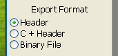

Program Overview
The Nintendo64 Texture Converter is a GUI based tool which allows you
to import images in a myriad of formats, and export them as one of the many
different image formats supported by the default Nintendo 64 microcode.
When you start the Nintendo64 Texture Converter, the following form is
shown:
On the top, you should have the familiar menu bar. On the left, you'll have a
lot of options relating to your image and how it will be exported. On the
bottom, you'll have more options relating to how your texture is handled by the
export. Note that many similar things can be achieved in different ways, such
as: choosing a command from the menu, clicking a button, or by using a keyboard
shortcut.
Icon Buttons
The menu bar on the top of the form features a bunch of different icons. Here
is a quick overview of what each one does:
-
New: Restarts the program to its
initial state, where no image is loaded.
-
Import Image: Loads an image for
conversion.
-
Import Alpha Mask: Loads a black
and white alpha mask. More information in the
Using Alpha page.
-
 Toggle Alpha View: Switches
between rendering your image or its alpha mask. More information in
the Using Alpha page.
Toggle Alpha View: Switches
between rendering your image or its alpha mask. More information in
the Using Alpha page.
-
View Palette: Opens the Palette
viewing form. More information in the
Palettes page.
-
Zoom In: Zooms the image view in.
-
Zoom Reset: Resets the image
view.
-
Zoom Out: Zooms the image view
out.
-
Rename Output: Allows you to
change the name of the outputted file and array(s).
-
Generate Palette: Generates a
basic palette. More information in the
Palettes page.
-
Compile: Exports your imported
image to the image and file format of your choosing.
-
Open Help: Opens this document.
Image Information
Upon importing an image into the program, information relevant to your image
is displayed on the top left:
The meaning of each row is as follows:
-
File: This is the name that will be used for the file when
you export your compiled image. It can be modified by pressing the
Rename Output icon button.
-
Array: This is the name that will be used for the arrays (that
store your image information in code) when you export your
compiled image. If you are using Binary File as your export
mode, this is not displayed. It can be modified by pressing the
Rename Output icon button. Array
names cannot start with numbers, and can only consist of alphanumeric
characters or underscores.
-
Size: This is the size of your imported image0s width and height
(in pixels).
-
TMEM: This is the size of your imported image (in texels). If
your image (in the Image Type mode you have selected) surpasses
the 4096 byte limit of TMEM, it will be displayed in red. If you have
selected the Chunk image checkbox, the size of each one of your
chunked images (in texels) will be displayed in parenthesis.
Image Type
Under the Image Information section, you have the Image Type
section:
This lets you select the texture format which your image gets exported
as, by selecting one of the radial buttons. An explanation of each image
type can be found in the Image Formats
section of this manual. You can also change the background color of your
image, provided it contains alpha, by clicking the colored square.
More information on how to use alpha is available in the
Using Alpha page.
Export Format
Under the Image Type section, you have the Export Format
section:

The meaning of each button is as follows:
-
Header: A standard C header file with your image data in an
array format. This header does not contain include guards (as they
are useless due to the array being declared), therefore this format
should only be used if it is known that the image will be
#include'ed once.
-
C + Header: A combination of a C and header file, with your
image data in an array format. The C file must be compiled on its own,
but because the header file uses
extern (as well as include guards) your
image can be #include'ed in multiple
files.
-
Binary File: A binary file with the raw texel data in it. This
is the best image format for large homebrew, but requires that your
data be linked into the ROM and DMA'd to RAM manually.
When exporting an image with palettes's, the TLUT data is placed in the same
file as your texel data, albiet in a separate array which uses the same name
as your main image, except ending with _tlut.
In Binary File mode, a second file is exported instead, following the
same naming scheme. More information on palettes can be found in the
Palettes page.
If chunking mode is used, the texel array will be split into multiple arrays,
albiet ending with _X_Y, where
X represents the N'th horizontal chunk and
Y represents the N'th vertical chunk. In
Binary File mode, multiple files are created instead, following the
same naming scheme. More information on chunking can be found in the
Chunking page.
Color Preview
Under the Export Format section, you have the Color Previewer
If you mouse over parts of your image, this section will display what that
specific texel will be exported as. Each row represents the color and alpha
value (be it in RGB, YUV, or I format) in 8 bit format, hexadecimal format,
or a smaller format (if applicable). If the smaller format exists, the
hexadecimal value will represent that, and not the 8 bit color!
Below the color matrix is a preview of the output texel with all the bits
properly combines, in hexadecimal format, as well as a color preview box of
the pixel that the mouse is currently over.
If a format that uses palettes is selected, the output texel may show up as
???? if no palette (either an
automatically generated one or an imported one) is present. If a palette
is present, then placing the mouse over a texel will display the palette value
instead (with the color it represents in parenthesis). More information on
palettes can be found in the Palettes page.
Bottom Bar
The bottom bar contains a few checkboxes and selections that allow you to
change certain things regarding how your image is exported. This section looks
like this:
The meaning of each button is as follows:
-
Use Alpha: Enables/disables the use of alpha. If enabled, you
can choose between using the alpha mask, or using a single color. If
single color mode is selected, you can change the color that will be
used for alpha by placing your mouse over the image in the preview
and left clicking on the pixel with the color you wish to set
transparent. More information on alpha can be found in the
Using Alpha page.
-
Add dummy aligners: If a non-binary Export Format is
selected, dummy aligners will be added to the exported array's
definitions. The dummy aligners are used to properly align the textures
in memory, and might lead to problems if not present. Uncheck if you
know what you are doing.
-
Force power of two: This forces your image size to be exported
as a power of two (for instance, 32x32, 128x64, etc...). This is
recommended your image is not already a power of two and
masking is going to be used (to allow for effects such as mirroring
and LODs). Texels outside of your image's size will use the value of
0. More information on masking can be found in the
Loading Textures page.
-
Chunk image: This splits your image into chunks with the size of
your choosing. More information on chunking can be found in the
Chunking page.
-
Generate Palette: If an image mode that supports palletes is
used, this button will generate a palette based on the imported image.
More information on palettes can be found in the
Palettes page.
-
Compile Image: Exports the imported image in the
Export Format you have selected.